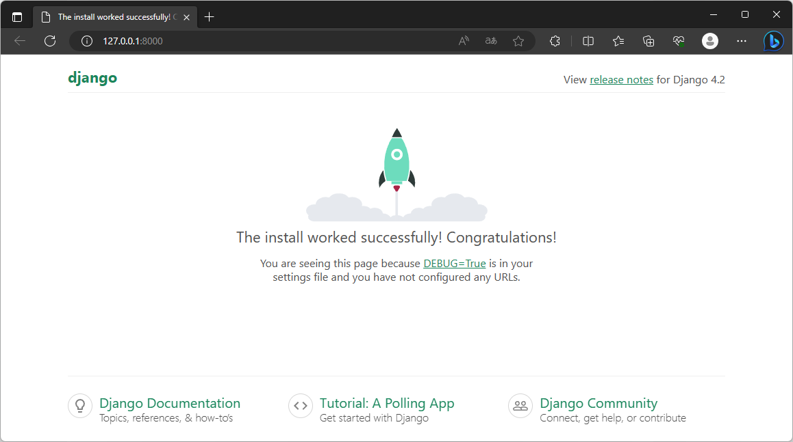
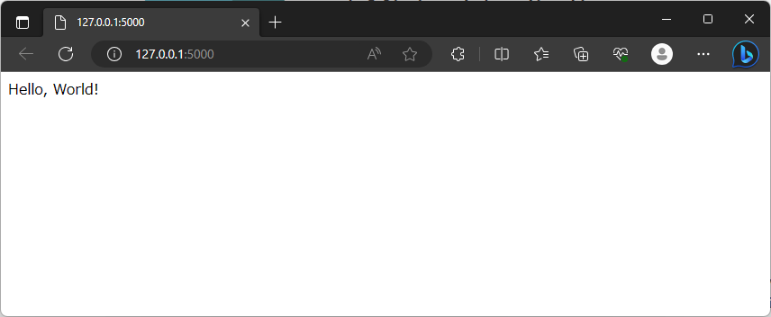
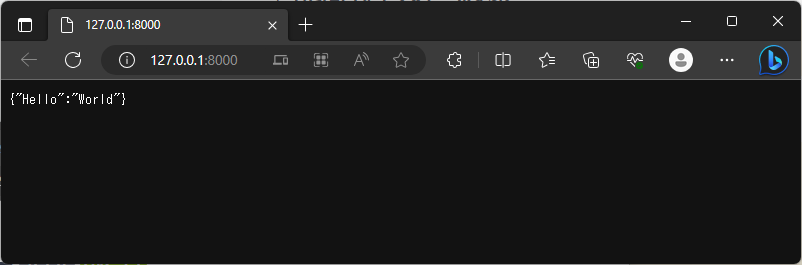
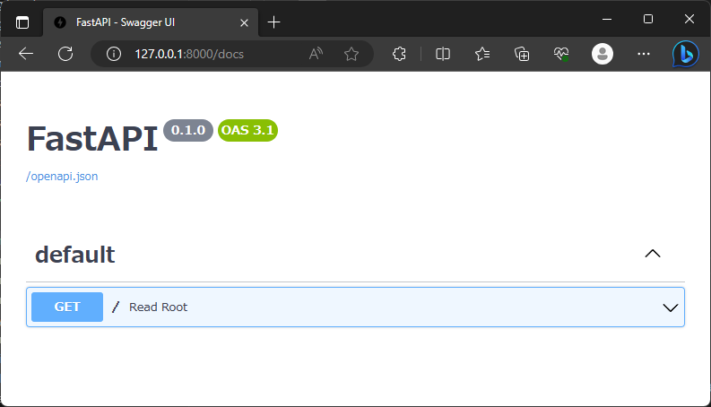
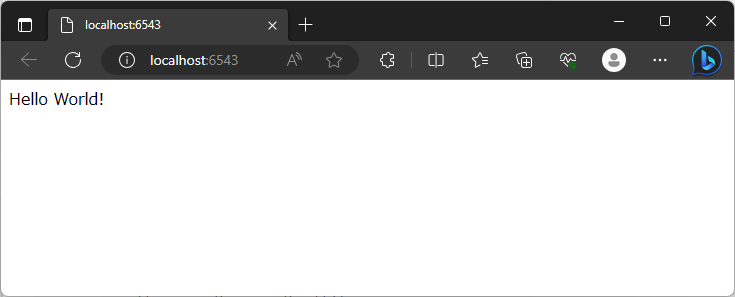
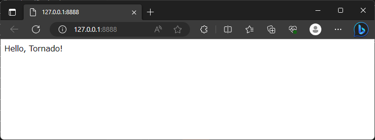

PythonのWebフレームワーク
PythonはWeb開発のための多くのフレームワークを提供しています。以下はその中の主要なものをいくつか紹介します。
1. Django
https://www.djangoproject.com/
- 大規模なWebアプリケーションの開発に適したフルスタックフレームワーク。”バッテリー同梱”の哲学に基づき、多くの機能が最初から組み込まれています。
2. Flask
https://flask.palletsprojects.com/
- マイクロフレームワークとして知られ、シンプルで拡張性が高い。小規模から中規模のアプリケーション開発に適しています。
3. FastAPI
- 高性能で現代的なフレームワーク。Pythonの型ヒントを使用し、非同期処理をネイティブサポートしています。
4. Pyramid
- 柔軟性とモジュラリティを重視したフレームワーク。Flaskと同様にマイクロフレームワークとして始めることができ、必要に応じて機能を追加していくことができます。
5. CherryPy
- Pythonのオブジェクト指向プログラムをWebアプリケーション開発に適用することを目的としたフレームワーク。HTTP/1.1準拠のWebサーバを持っています。
6. Tornado
- 高性能な非同期WebサーバとWebアプリケーションフレームワークを一体化したもの。リアルタイムWebサービスの開発に特に適しています。
これらのフレームワークは、それぞれ独自の特性や利点を持っているため、プロジェクトの要件や好みに合わせて選択すると良いでしょう。
1. Django (ジャンゴ) について
DjangoはPythonで書かれた、高度に再利用可能なコンポーネントを持つフルスタックのWebフレームワークです。*”Django makes it easier to build web applications quickly and with less code”* とのフレーズで知られています。
特徴
MTVアーキテクチャ
DjangoはMVCアーキテクチャに似ていますが、Djangoの場合はMTV（Model-Template-View）として知られています。- Model: データベースとのインタラクションを担当する部分。
- Template: ユーザーに表示される部分、HTMLを生成する部分。
- View: アプリケーションのロジックを持つ部分。
DRY原則
“Don’t Repeat Yourself”（繰り返しを避ける）を実践して、コードの再利用を促進します。バッテリー同梱
Djangoには「バッテリー同梱」という哲学があり、多くの機能（認証、セキュリティ、フォーム、管理パネルなど）がデフォルトで含まれています。安全性
Djangoは、多くの一般的なセキュリティ問題（XSS、CSRF、SQLインジェクションなど）を考慮し、これらの問題から保護する機能を提供します。データベースのマイグレーション
簡単にデータベースの変更やアップデートを行うためのツールが組み込まれています。
開始方法
Djangoをインストールする。
1
pip install django
新しいプロジェクトを作成する。
1
django-admin startproject projectname
開発サーバーを起動する。
1
2cd projectname
python manage.py runserverこれにより、デフォルトで
http://127.0.0.1:8000/にローカルサーバーが起動します。

Djangoは非常に包括的で強力なフレームワークなので、詳細な情報やチュートリアルは公式ドキュメントや関連書籍を参照することをおすすめします。
2. Flask (フラスク) について
FlaskはPythonで書かれた軽量なWebフレームワークです。単純さと拡張性を重視しており、小さなアプリケーションから大規模なプロジェクトまで対応可能です。
特徴
軽量: Flaskは「マイクロ」フレームワークとして設計されており、必要最低限の機能のみが含まれています。しかし、多くの拡張が提供されており、必要に応じて機能を追加できます。
簡単なルーティング: URLルートを関数にマッピングすることが非常に簡単です。
開発サーバーとデバッガ: 組み込みの開発サーバーとデバッガを提供しています。
Jinja2テンプレート: FlaskはJinja2テンプレートエンジンを使用しており、動的コンテンツのレンダリングが簡単になります。
RESTful要求のサポート: RESTful要求の送信やデータの取得が容易です。
セキュア: 保護機能（データの安全な保存、セッションなど）が提供されています。
開始方法
Flaskをインストールする。
1
pip install Flask
簡単なアプリケーションを作成する。
1
2
3
4
5
6from flask import Flask
app = Flask(__name__)
@app.route('/')
def hello_world():
return 'Hello, World!'アプリケーションを実行する。
1
flask --app main.py run
上記の手順で、開発サーバーが起動し、http://127.0.0.1:5000/ にアクセスすると “Hello, World!” が表示されます。

公式ドキュメントやチュートリアルはFlaskのウェブサイトで提供されており、初心者から上級者までの情報が豊富に用意されています。
3. FastAPI (ファーストAPI) について
FastAPIは、Python 3.6以降のバージョンでのみ動作する、現代的で、高速(高性能)なWebフレームワークです。FastAPIは標準のPython型ヒントを使用してAPIを構築することを特徴としています。
特徴
型ヒント: Pythonの型ヒントを利用してパラメータのバリデーション、シリアライゼーション、ドキュメント作成を自動化します。
高性能: NodeJSやGoと同等の性能を持ちながら、Pythonの簡潔さと易しさを維持しています。
自動ドキュメント: FastAPIを使用してAPIを構築すると、自動的にSwagger UIとReDocの2つのインタラクティブなAPIドキュメントが生成されます。
OAuth2とJWTの統合: セキュリティと認証の仕組みを簡単に導入することができます。
非同期処理:
async/awaitを使用した非同期処理をネイティブサポートしています。これにより、非常に高速なAPIを簡単に構築できます。
開始方法
FastAPIをインストールする。
1
pip install fastapi[all]
簡単なアプリケーションを作成する。
1
2
3
4
5
6
7from fastapi import FastAPI
app = FastAPI()
@app.get("/")
def read_root():
return {"Hello": "World"}アプリケーションを実行する。
1
uvicorn main:app --reload
上記の手順で、開発サーバーが起動し、
http://127.0.0.1:8000/にアクセスすると “Hello, World!” のJSONレスポンスが得られます。

また、http://127.0.0.1:8000/docsにアクセスすると、自動生成されたSwagger UIのドキュメントが表示されます。

FastAPIは非常に包括的で強力なフレームワークであり、その詳細な情報やチュートリアルは公式ドキュメントを参照することをおすすめします。
4. Pyramid (ピラミッド) について
PyramidはPythonで書かれたWebアプリケーションフレームワークで、柔軟性とモジュラリティを特長としています。
特徴
スケーラビリティ: Pyramidは「最小限のフレームワーク」として始めることができ、必要に応じて拡張することができます。
柔軟性: Pyramidは、あなたの要件に応じて必要なコンポーネントを選択して使うことができます。
URLジェネレーション: Webアプリケーション内のページへのリンクを動的に生成できます。
拡張性: 多くのプラグインやアドオンが利用可能で、独自の機能やミドルウェアを追加することも容易です。
セキュリティ: CSRF、クロスサイトスクリプティング、SQLインジェクションなどの一般的なWeb脅威からの保護機能が組み込まれています。
開始方法
Pyramidをインストールする。
1
pip install pyramid
簡単なアプリケーションを作成する。
1
2
3
4
5
6
7
8
9
10
11
12
13
14from wsgiref.simple_server import make_server
from pyramid.config import Configurator
from pyramid.response import Response
def hello_world(request):
return Response('Hello World!')
if __name__ == '__main__':
with Configurator() as config:
config.add_route('hello', '/')
config.add_view(hello_world, route_name='hello')
app = config.make_wsgi_app()
server = make_server('0.0.0.0', 6543, app)
server.serve_forever()アプリケーションを実行する。
1
python main.py
上記の手順で、開発サーバーが起動し、
http://localhost:6543/にアクセスすると “Hello World!” が表示されます。

公式ドキュメントは非常に詳細で、新しいユーザーから経験豊富な開発者まで役立つ情報が提供されています。Pyramidのコミュニティも活発で、多くのリソースやサポートが提供されています。
5. CherryPy (チェリーパイ) について
CherryPyは、Pythonのオブジェクト指向プログラミングをWebアプリケーション開発に適用することを目的としたフレームワークです。HTTP/1.1準拠のWebサーバも組み込まれており、単体で動作させることが可能です。
特徴
シンプルなAPI: CherryPyはPythonicなアプローチを採用しており、簡単に理解しやすいAPIを提供しています。
組み込みサーバ: 独自の組み込みHTTPサーバを持っており、別途サーバソフトウェアをセットアップする必要がありません。
フレキシブルなプラグインアーキテクチャ: CherryPyは多くのプラグインをサポートしており、簡単に追加や変更が可能です。
マルチスレッドサーバ: マルチスレッドのWebサーバが組み込まれており、複数のリクエストを同時に処理することができます。
開始方法
CherryPyをインストールする。
1
pip install cherrypy
簡単なアプリケーションを作成する。
1
2
3
4
5
6
7
8import cherrypy
class HelloWorld:
@cherrypy.expose
def index(self):
return "Hello World!"
cherrypy.quickstart(HelloWorld())アプリケーションを実行する。
1
python main.py
スクリプトを実行すると、CherryPyのサーバが起動し、
http://127.0.0.1:8080/にアクセスすることで “Hello World!” が表示されます。

CherryPyは長い歴史を持つフレームワークであり、簡潔さと強力さを兼ね備えています。詳細な情報やチュートリアルは公式ドキュメントを参照することをおすすめします。
6. Tornado (トルネード) について
Tornadoは、高性能な非同期WebサーバおよびWebアプリケーションフレームワークとして知られています。リアルタイムWebサービスの開発に特に適しており、数千の同時接続をサポートしています。
特徴
非同期I/O: Tornadoは非同期I/Oをネイティブサポートしており、高い同時接続数を持つアプリケーションでも高いパフォーマンスを維持します。
リアルタイムサービス: WebSocketsやlong pollingなどのリアルタイムの通信技術をサポートしています。
組み込みのHTTPサーバ: Tornadoは独自の高性能HTTPサーバを持っており、追加の設定やデプロイメントが不要です。
サードパーティのサポート: 多くのサードパーティのライブラリやフレームワークとの統合が容易です。
開始方法
Tornadoをインストールする。
1
pip install tornado
簡単なアプリケーションを作成する。
1
2
3
4
5
6
7
8
9
10
11import tornado.ioloop
import tornado.web
class MainHandler(tornado.web.RequestHandler):
def get(self):
self.write("Hello, Tornado!")
if __name__ == "__main__":
app = tornado.web.Application([(r"/", MainHandler)])
app.listen(8888)
tornado.ioloop.IOLoop.current().start()アプリケーションを実行する。
1
python main.py
スクリプトを実行すると、Tornadoのサーバが起動し、
http://127.0.0.1:8888/にアクセスすることで “Hello, Tornado!” が表示されます。

Tornadoは非同期のWebアプリケーションの開発に特化しており、高い性能要件を持つプロジェクトにおすすめです。詳細な情報やチュートリアルは公式ドキュメントを参照してください。